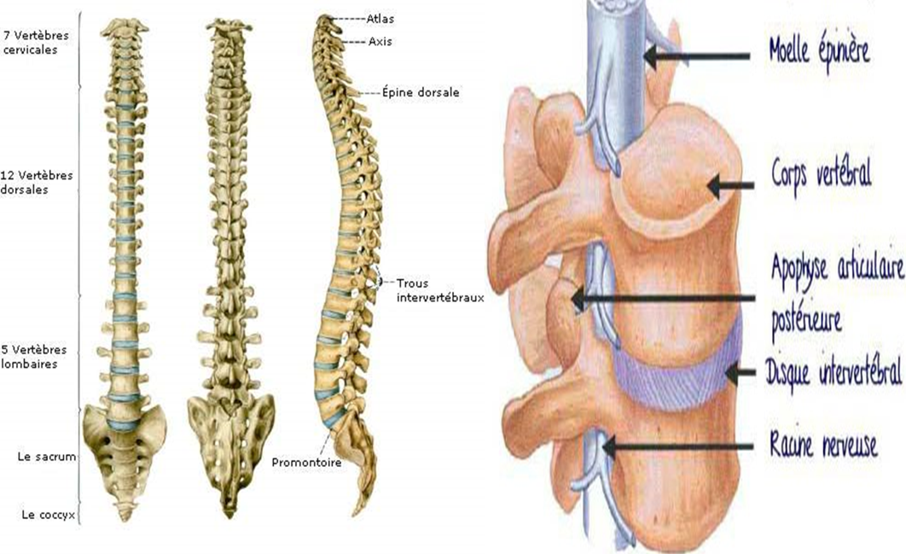
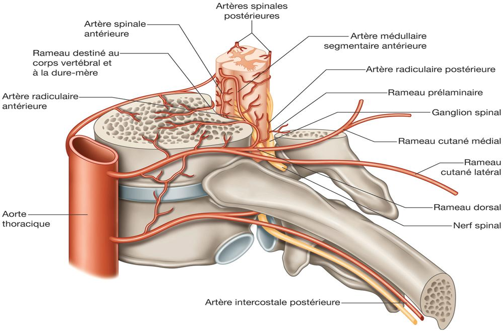
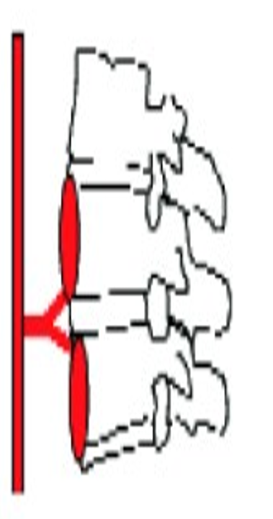
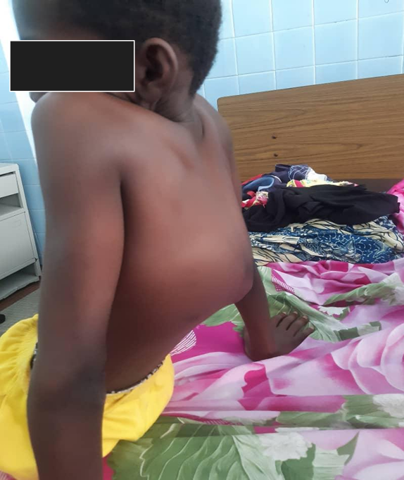
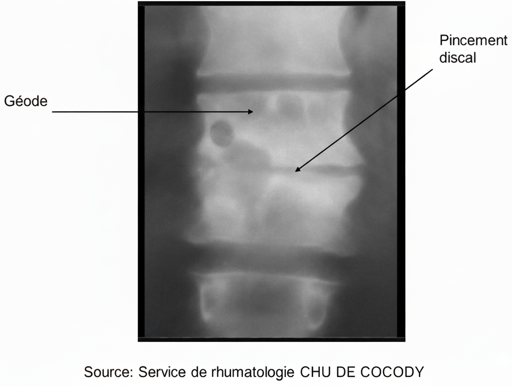
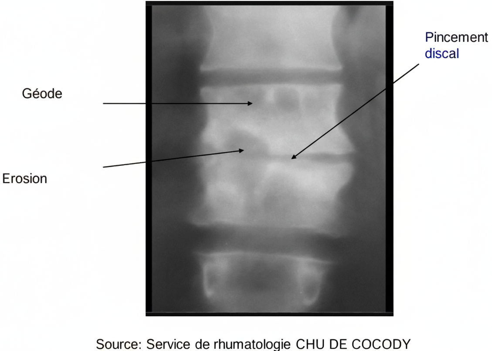
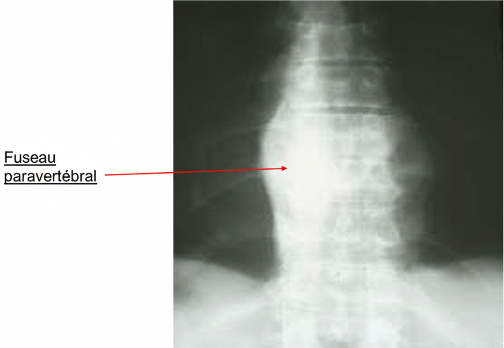
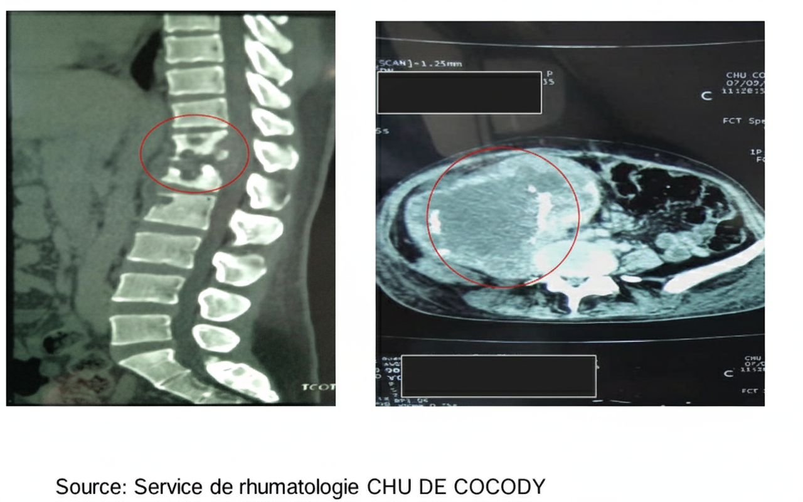
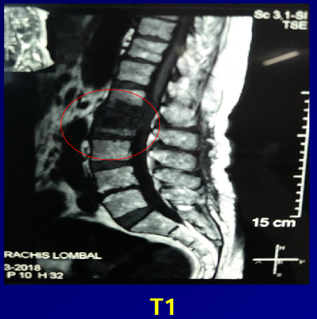
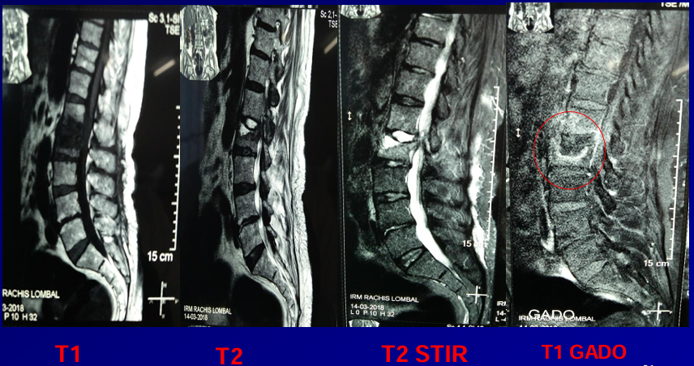

Spondylodiscite vue par le rhumatologue
Conduite à tenir devant une spondylodiscite infectieuse
1 Objectifs du cours
- ✅ Définir la spondylodiscite
- ✅ Faire le diagnostic positif de la spondylodiscite tuberculeuse
- ✅ Citer les 4 principaux germes banals
- ✅ Énoncer les principes du traitement
2 Généralités
2.1 Définition
2.1.1 📘 Définition
Spondylodiscite = atteinte inflammatoire de :
- 💿 Disque intervertébral (discite)
- 🦴 Corps vertébraux adjacents (spondylite)1
2.1.2 ⚠️ Urgence
🛑 La spondylodiscite est une urgence diagnostique et médico-chirurgicale.2
2.2 Introduction
2.2.1 🎯 Intérêt
- 🔢 Fréquence : ≈ 34 % des infections ostéo-articulaires.
- 🧫 Étiologie tuberculeuse : ≈ 7,6 %.
- 🩺 Diagnostic fondé sur la clinique, la biologie et l’imagerie.
- 🧪 La ponction-biopsie disco-vertébrale permet l’isolement du germe.
2.3 Rappels anatomiques
2.3.1 Colonne vertébrale et disque intervertébral

2.3.2 Détails anatomiques complémentaires

3 Physiopathologie
3.1 Germes en cause
- 🧫 Bacille tuberculeux (bacille de Koch)
- 🧪 Staphylococcus aureus
- 🧪 Streptocoques β-hémolytiques
3.2 Terrain et facteurs favorisants
3.2.1 👤 Terrain à risque3
- Sexe masculin
- Âge > 50 ans
- Présence de facteurs favorisants
3.2.2 ⚠️ Facteurs favorisants
- 😷 Immunodépression : VIH, diabète, insuffisance rénale chronique, hémodialyse, insuffisance hépatique, rhumatismes inflammatoires chroniques
- 💊 Corticothérapie prolongée, immunosuppresseurs
- 🍷 Alcoolisme
- ☣️ Toxicomanie
3.3 Porte d’entrée
3.3.1 🚪 Principales portes d’entrée4
- Pulmonaire (≈ 50 % des tuberculoses pulmonaires)
- Dentaire
- Digestive
- Urologique
- Cutanée
3.4 Inoculation et atteinte vertébrale
3.4.1 Voies d’inoculation
- 🩸 Hématogène
- 💉 Directe
3.4.2 Atteinte du corps vertébral
- Plateaux vertébraux
- Disque intervertébral
- Extensions vasculaires et sous-ligamentaires
3.4.3 🖼 Schéma d’atteinte vertébrale

4 Diagnostic positif
4.1 Mal de Pott : présentation typique
4.1.1 🔴 Mal de Pott
- Fréquente chez l’Africain
- ≈ 75 % des spondylodiscites infectieuses
- Possible à tout âge
- Souvent associée à un contage tuberculeux
4.2 Motif de consultation : douleur rachidienne
- Liée à la topographie
- Localisée ou irradiant
- Installation insidieuse
- Mécanique puis inflammatoire
- Intensité variable
4.3 Troubles moteurs et déformations
4.3.1 Troubles moteurs
- Paraparésie
- Paraplégie
- Tétraplégie
4.3.2 Déformations
- Tuméfaction rachidienne
- Gibbosité
4.4 Interrogatoire
4.4.1 Signes généraux
- 🌡️ Fièvre vespérale
- 😴 Asthénie
- 🚫🍽️ Anorexie
- ⚖️ Amaigrissement
- 🌙 Sueurs nocturnes
4.4.2 Facteurs favorisants
- Antécédents TB
- Notion de contage
- Promiscuité
- Immunodépression
4.5 Syndrome rachidien
4.5.1 Inspection
- Attitude guindée
- Courbures modifiées
- Tuméfaction dorsolombaire
4.5.2 Palpation
- Contracture paravertébrale
- Points douloureux
- Abcès froid
4.5.3 🖼 Illustration clinique

4.6 Examen physique
4.6.1 Mobilité
- 🔒 Raideur segmentaire
- Impossibilité des mouvements
4.6.2 Neurologique
- Déficit moteur
- Troubles sensitifs
- Troubles sphinctériens
4.6.3 État général
- Évaluation
- Recherche d’autres atteintes TB : poumon, ganglions, tube digestif, uro-génital
5 Diagnostic paraclinique
5.1 Radiographie standard
5.1.1 🩻 Signes radiographiques
- 🔻 Pincement discal
- Déminéralisation
- Érosions
- Géodes
- Opacité paravertébrale

5.1.2 Exemples
  
5.2 TDM & scintigraphie
- Lésions osseuses
- Bilan d’extension
- Hyperfixation scintigraphique

5.3 IRM
5.3.1 🚨 IRM rachidienne
Examen clé en urgence neurologique
- Séquences T1 / T2 / STIR
- Recherche épidurite / abcès

5.3.2 Autres vues


5.4 Examens spécifiques
5.4.1 🔬 Ponction / biopsie
Permet l’isolement du germe et la confirmation diagnostique.
5.4.2 Histologie
- Granulome épithélioïde
- Nécrose caséeuse
5.4.3 Cyto-bactériologie
- Auramine
- Lowenstein / BACTEC
- PCR BK
5.5 Arguments indirects
5.5.1 Bactériologie
- BAAR
- Culture
- Crachats, urine
5.5.2 Biologie
- Quantiferon
- IDR phlycténulaire
6 Diagnostic étiologique
6.1 Comparatif
| Germes banals | Tuberculose | |
|---|---|---|
| Début | Brutal | Progressif |
| Fièvre | Élevée | Faible |
| VS | Très élevée | Modérée |
| CRP | Très haute | Moyenne |
| Hémocultures | Positives | Négatives |
| Radiographie | Destructive | Peu sévère |
| Complications neuro | Rares | Fréquentes |
6.2 Étiologies
6.2.1 Spécifiques
- TB
- Brucellose
6.2.2 Banal
- Cocci Gram +
- Bacilles Gram –
6.2.3 Autres
- Parasites
- Mycoses
- Virus
7 Traitement
7.1 Objectifs
7.1.1 🎯 Objectifs
- Stériliser le foyer
- Soulager le patient
- Prévenir les complications
- Réinsertion sociale
7.2 Traitement antituberculeux
- Rifampicine
- Isoniazide
- Pyrazinamide
- Ethambutol
Schéma : RHZE 2 mois → RH 10 mois
7.3 Antibiothérapie
- Oxacilline
- Ceftriaxone
- Gentamycine
- Ofloxacine
- Acide fusidique
7.4 Traitement physique
- Nursing
- Corset
- Rééducation

7.5 Traitement chirurgical
- Drainage
- Décompression
- Stabilisation
7.6 Surveillance
- Clinique : ictère, prurit, urines foncées, arthralgies
- Paraclinique : transaminases, urée, créatinine
- Imagerie en fin de traitement
8 Conclusion
8.0.1 ✅ Points essentiels
- Affection fréquente
- Complications neurologiques et orthopédiques
- Diagnostic précoce essentiel
- Traitement long et bien conduit
Merci de votre attention.